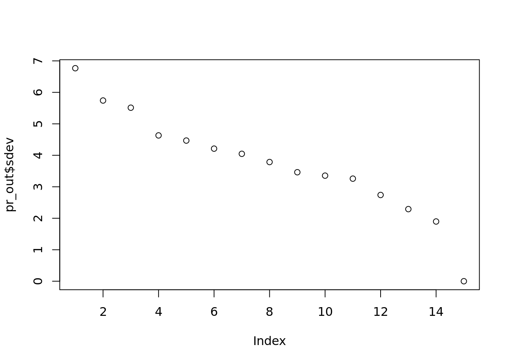
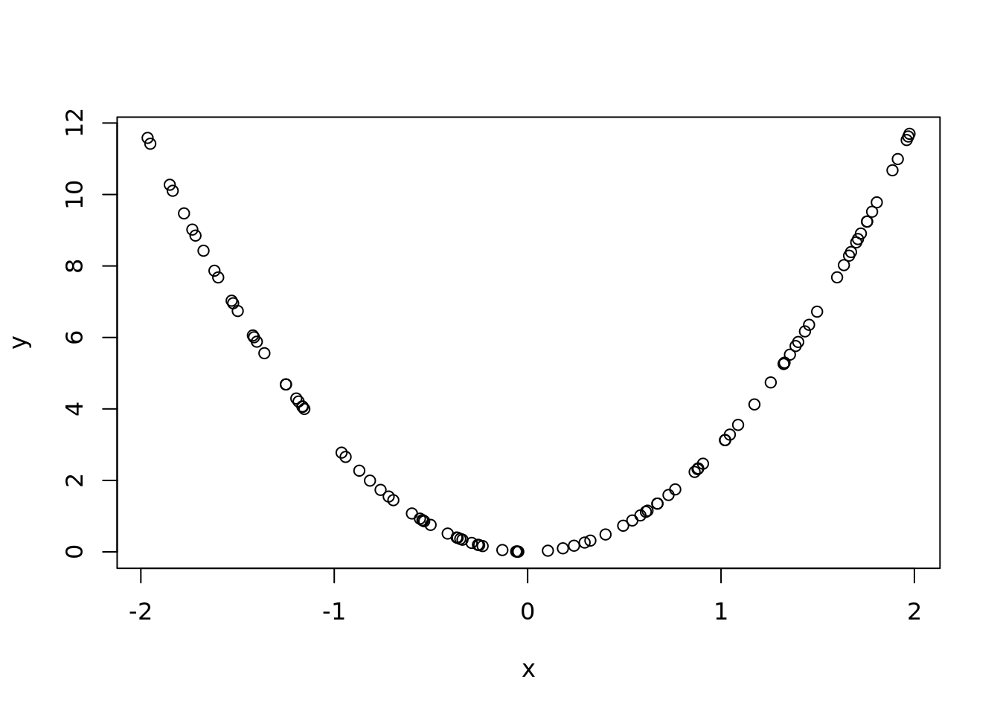

Chapter 5 Principal Component Analysis Applied!
5.1 Citation data
5.1.1 Other example
In really poor countries it is super hard to measure wealth and income. There are no reciepts and corresponding taxes. People don’t have bank accounts. Instead, you measure features. Like do you have a fridge. Do you have cooking equipment? How many kids? How many room in your house?
So you could run PCA on assets matrix. You can find correlations. If you have more rooms in your house, you likely have more education. The correlations will be baked into the principal driving component. Further, they use this as the Y to see if they can predict! But that is beyond the scope of this class.
library(jsonlite)
citations <- read.csv("Datasets/j_cunningham_citation.csv", head = FALSE)
titles <- read_json("Datasets/j_cunningham_citation_titles.json")#Explore the data
dim(citations)## [1] 15 754head(citations)## V1 V2 V3 V4 V5 V6 V7 V8 V9 V10 V11 V12 V13 V14 V15 V16 V17 V18 V19 V20 V21 V22 V23 V24 V25
## 1 0 0 0 0 0 0 0 0 0 0 0 0 0 0 0 0 0 0 0 0 0 0 0 0 0
## V26 V27 V28 V29 V30 V31 V32 V33 V34 V35 V36 V37 V38 V39 V40 V41 V42 V43 V44 V45 V46 V47 V48
## 1 0 0 0 0 0 0 0 0 0 0 0 0 0 1 0 0 0 0 0 0 0 0 0
## V49 V50 V51 V52 V53 V54 V55 V56 V57 V58 V59 V60 V61 V62 V63 V64 V65 V66 V67 V68 V69 V70 V71
## 1 0 0 0 0 0 0 0 0 0 0 0 0 0 0 0 0 0 0 0 0 0 0 0
## V72 V73 V74 V75 V76 V77 V78 V79 V80 V81 V82 V83 V84 V85 V86 V87 V88 V89 V90 V91 V92 V93 V94
## 1 0 0 0 0 0 0 0 0 0 0 0 0 0 0 0 0 0 0 0 0 0 0 0
## V95 V96 V97 V98 V99 V100 V101 V102 V103 V104 V105 V106 V107 V108 V109 V110 V111 V112 V113
## 1 0 0 0 0 0 0 0 0 0 0 0 0 0 0 0 0 0 0 0
## V114 V115 V116 V117 V118 V119 V120 V121 V122 V123 V124 V125 V126 V127 V128 V129 V130 V131
## 1 0 0 0 0 0 0 0 0 0 0 0 0 0 0 0 0 0 0
## V132 V133 V134 V135 V136 V137 V138 V139 V140 V141 V142 V143 V144 V145 V146 V147 V148 V149
## 1 0 0 0 1 1 1 0 1 7 3 0 0 2 2 3 0 2 3
## V150 V151 V152 V153 V154 V155 V156 V157 V158 V159 V160 V161 V162 V163 V164 V165 V166 V167
## 1 0 3 0 3 3 8 0 0 3 2 6 0 0 0 4 1 0 1
## V168 V169 V170 V171 V172 V173 V174 V175 V176 V177 V178 V179 V180 V181 V182 V183 V184 V185
## 1 0 0 1 1 0 0 1 0 1 2 0 0 1 0 1 0 0 1
## V186 V187 V188 V189 V190 V191 V192 V193 V194 V195 V196 V197 V198 V199 V200 V201 V202 V203
## 1 4 0 1 0 0 1 2 0 0 1 2 0 2 0 0 1 1 0
## V204 V205 V206 V207 V208 V209 V210 V211 V212 V213 V214 V215 V216 V217 V218 V219 V220 V221
## 1 0 2 1 0 3 0 1 1 0 0 3 0 2 3 0 0 2 0
## V222 V223 V224 V225 V226 V227 V228 V229 V230 V231 V232 V233 V234 V235 V236 V237 V238 V239
## 1 0 1 0 0 1 0 0 1 0 1 1 0 1 1 0 1 0 1
## V240 V241 V242 V243 V244 V245 V246 V247 V248 V249 V250 V251 V252 V253 V254 V255 V256 V257
## 1 1 0 1 1 0 0 0 0 1 0 1 1 0 0 0 0 1 0
## V258 V259 V260 V261 V262 V263 V264 V265 V266 V267 V268 V269 V270 V271 V272 V273 V274 V275
## 1 1 0 0 0 1 0 1 0 0 0 0 1 1 0 0 0 0 1
## V276 V277 V278 V279 V280 V281 V282 V283 V284 V285 V286 V287 V288 V289 V290 V291 V292 V293
## 1 1 0 1 0 0 0 1 0 2 0 1 0 1 0 2 1 1 1
## V294 V295 V296 V297 V298 V299 V300 V301 V302 V303 V304 V305 V306 V307 V308 V309 V310 V311
## 1 0 1 0 1 0 0 0 1 1 1 0 1 0 0 1 0 1 0
## V312 V313 V314 V315 V316 V317 V318 V319 V320 V321 V322 V323 V324 V325 V326 V327 V328 V329
## 1 1 0 0 0 0 0 0 0 0 0 0 0 0 0 0 0 0 0
## V330 V331 V332 V333 V334 V335 V336 V337 V338 V339 V340 V341 V342 V343 V344 V345 V346 V347
## 1 0 0 0 0 0 0 0 0 0 0 0 0 0 0 0 0 0 0
## V348 V349 V350 V351 V352 V353 V354 V355 V356 V357 V358 V359 V360 V361 V362 V363 V364 V365
## 1 0 0 0 0 0 0 0 0 0 0 0 0 0 0 0 0 0 0
## V366 V367 V368 V369 V370 V371 V372 V373 V374 V375 V376 V377 V378 V379 V380 V381 V382 V383
## 1 0 0 0 0 0 0 0 0 0 0 0 0 0 0 0 0 0 0
## V384 V385 V386 V387 V388 V389 V390 V391 V392 V393 V394 V395 V396 V397 V398 V399 V400 V401
## 1 0 0 0 0 0 0 0 0 0 0 0 0 0 0 0 0 0 0
## V402 V403 V404 V405 V406 V407 V408 V409 V410 V411 V412 V413 V414 V415 V416 V417 V418 V419
## 1 0 0 0 0 0 0 0 0 0 0 0 0 0 0 0 0 0 0
## V420 V421 V422 V423 V424 V425 V426 V427 V428 V429 V430 V431 V432 V433 V434 V435 V436 V437
## 1 5 0 0 0 0 0 0 0 5 0 0 0 0 0 0 0 0 0
## V438 V439 V440 V441 V442 V443 V444 V445 V446 V447 V448 V449 V450 V451 V452 V453 V454 V455
## 1 0 0 0 0 0 0 0 0 0 0 0 0 0 0 0 0 0 0
## V456 V457 V458 V459 V460 V461 V462 V463 V464 V465 V466 V467 V468 V469 V470 V471 V472 V473
## 1 0 0 0 0 0 0 0 0 0 0 0 0 0 0 0 0 0 0
## V474 V475 V476 V477 V478 V479 V480 V481 V482 V483 V484 V485 V486 V487 V488 V489 V490 V491
## 1 0 0 0 0 0 0 0 0 0 0 0 0 0 0 0 0 0 0
## V492 V493 V494 V495 V496 V497 V498 V499 V500 V501 V502 V503 V504 V505 V506 V507 V508 V509
## 1 0 0 0 0 0 0 0 0 0 0 0 0 0 0 0 0 0 0
## V510 V511 V512 V513 V514 V515 V516 V517 V518 V519 V520 V521 V522 V523 V524 V525 V526 V527
## 1 0 0 0 0 0 0 0 0 0 0 0 0 0 0 0 0 0 0
## V528 V529 V530 V531 V532 V533 V534 V535 V536 V537 V538 V539 V540 V541 V542 V543 V544 V545
## 1 0 0 0 0 0 0 0 0 0 0 0 0 0 0 0 0 0 0
## V546 V547 V548 V549 V550 V551 V552 V553 V554 V555 V556 V557 V558 V559 V560 V561 V562 V563
## 1 0 0 0 0 0 0 0 0 0 0 0 0 0 0 0 0 3 0
## V564 V565 V566 V567 V568 V569 V570 V571 V572 V573 V574 V575 V576 V577 V578 V579 V580 V581
## 1 0 0 0 0 0 0 0 0 0 0 0 0 0 0 0 0 0 0
## V582 V583 V584 V585 V586 V587 V588 V589 V590 V591 V592 V593 V594 V595 V596 V597 V598 V599
## 1 0 0 0 0 0 0 0 0 0 0 0 0 0 0 0 0 0 0
## V600 V601 V602 V603 V604 V605 V606 V607 V608 V609 V610 V611 V612 V613 V614 V615 V616 V617
## 1 0 0 0 0 0 0 0 0 0 0 0 0 0 0 0 0 0 0
## V618 V619 V620 V621 V622 V623 V624 V625 V626 V627 V628 V629 V630 V631 V632 V633 V634 V635
## 1 0 0 0 0 0 0 0 0 0 0 0 0 0 0 0 0 0 0
## V636 V637 V638 V639 V640 V641 V642 V643 V644 V645 V646 V647 V648 V649 V650 V651 V652 V653
## 1 0 0 0 0 0 0 0 0 0 0 1 0 0 0 0 0 0 0
## V654 V655 V656 V657 V658 V659 V660 V661 V662 V663 V664 V665 V666 V667 V668 V669 V670 V671
## 1 0 0 0 0 0 0 0 0 0 0 0 0 0 0 0 0 0 0
## V672 V673 V674 V675 V676 V677 V678 V679 V680 V681 V682 V683 V684 V685 V686 V687 V688 V689
## 1 0 0 0 0 0 0 0 0 0 0 0 0 0 0 0 0 0 0
## V690 V691 V692 V693 V694 V695 V696 V697 V698 V699 V700 V701 V702 V703 V704 V705 V706 V707
## 1 0 0 0 0 0 0 0 0 0 0 0 0 0 0 0 0 0 0
## V708 V709 V710 V711 V712 V713 V714 V715 V716 V717 V718 V719 V720 V721 V722 V723 V724 V725
## 1 0 0 0 0 0 0 0 0 0 0 0 0 0 0 0 0 0 0
## V726 V727 V728 V729 V730 V731 V732 V733 V734 V735 V736 V737 V738 V739 V740 V741 V742 V743
## 1 0 0 0 0 0 0 0 0 0 0 0 0 0 0 0 0 0 0
## V744 V745 V746 V747 V748 V749 V750 V751 V752 V753 V754
## 1 0 0 0 0 0 0 0 0 0 0 0
## [ reached 'max' / getOption("max.print") -- omitted 5 rows ]citations[1:5,1:5]## V1 V2 V3 V4 V5
## 1 0 0 0 0 0
## 2 0 0 0 0 0
## 3 0 0 0 0 0
## 4 0 0 0 0 0
## 5 0 0 0 0 0max(citations)## [1] 14#across all paers
apply(citations, 1, max)## [1] 8 7 14 5 5 8 6 8 11 5 3 5 11 3 4names(titles)## [1] "auth_titles" "ref_titles"Papers that he has written:
head(titles[["auth_titles"]],3)## [[1]]
## [1] "Value and choice as separable, stable representations in orbitofrontal cortex"
##
## [[2]]
## [1] "Calibrating deep convolutional gaussian processes"
##
## [[3]]
## [1] "Neural trajectories in the supplementary motor area and motor cortex exhibit distinct geometries, compatible with different classes of computation"Papers he has cited
head(titles[["ref_titles"]],3)## [[1]]
## [1] "On improved estimation of normal precision matrix and discriminant coefficients"
##
## [[2]]
## [1] "Snakemake--a scalable bioinformatics workflow engine"
##
## [[3]]
## [1] "Bayesian source localization with the multivariate laplace prior"Among the 15, there are four papers that reference the 2 most popular articles. Let us find them:
ref_count <- apply(citations, 2, function(x)
sum(x > 0))
targets <- tail(names(sort(ref_count)),2)
#These are the two columns we want
target_ind <- which(names(citations) %in% targets)
target_ind## [1] 186 428titles[["ref_titles"]][target_ind]## [[1]]
## [1] "A category-free neural population supports evolving demands during decision-making"
##
## [[2]]
## [1] "Reorganization between preparatory and movement population responses in motor cortex"Explore this data: we know the index of the two. This can show the correlation between the two, meaning the papers are cited by certain papers. This would make sense. If you cite one of these, you almost certainly have to cite the other:
citations[,target_ind]## V186 V428
## 1 4 5
## 2 0 0
## 3 1 1
## 4 0 0
## 5 0 0
## 6 0 0
## 7 0 0
## 8 0 0
## 9 3 1
## 10 0 0
## 11 0 0
## 12 0 0
## 13 0 0
## 14 0 0
## 15 2 1We would intuitively jus apply our prcomp, like we learned in last class.
pr_out <- prcomp(citations)
plot(pr_out$sdev, main="") This plot is not very appealing. There is not a significant drop until the last term. Maybe between 1 and 2 and 3 and 4, but not a big drop. And if you only abandon 1 dimension, (14 instead of 15), you aren’t really saving a lot.
5.1.1.1 Try standardizing the citation matrix in different ways
5.1.1.1.1 Usual standardization, i.e. make each feature mean=0 and sd = 1
norm_citation <- apply(citations, 2 , scale)
#also
pr_out <- prcomp(norm_citation)
plot(pr_out$sdev, main="")
png("Datasets/loadings_normal_standardization.png", 900, 700)
par(mfrow=c(4, 3))
for(i in seq_len(ncol(pr_out$rotation[,1:12]))){
eigenvec <- pr_out$rotation[, i]
plot(eigenvec)
abline(h=0)
}
dev.off()## png
## 2titles[["ref_titles"]][target_ind]## [[1]]
## [1] "A category-free neural population supports evolving demands during decision-making"
##
## [[2]]
## [1] "Reorganization between preparatory and movement population responses in motor cortex"This is bad! You subtract something away from 0 values. But we like 0s becasue they don’t affect the objective function.
5.1.1.1.2 Max normalized, i.e. make each feature min=0, max = 1
pr_out <- prcomp(citations)
plot(pr_out$sdev, main="")
png("Datasets/loadings_max_normalized.png", 900, 700)
par(mfrow=c(4, 3))
for(i in seq_len(ncol(pr_out$rotation[,1:12]))){
eigenvec <- pr_out$rotation[, i]
plot(eigenvec)
abline(h=0)
}
dev.off()## png
## 2titles[["ref_titles"]][target_ind]## [[1]]
## [1] "A category-free neural population supports evolving demands during decision-making"
##
## [[2]]
## [1] "Reorganization between preparatory and movement population responses in motor cortex"5.1.1.1.3 Max normalized per paper, i.e. make each ROW min=0, max = 1
citations_norm <- as.data.frame(t(apply(citations, 1, function(x)(x-min(x))/(max(x)-min(x)))))
citations_norm## V1 V2 V3 V4 V5 V6 V7 V8 V9 V10 V11 V12 V13 V14 V15 V16 V17 V18 V19 V20 V21 V22 V23 V24 V25
## 1 0 0 0 0 0 0 0 0 0 0 0 0 0 0 0 0 0 0 0 0 0 0 0 0 0
## V26 V27 V28 V29 V30 V31 V32 V33 V34 V35 V36 V37 V38 V39 V40 V41 V42 V43 V44 V45 V46 V47
## 1 0 0 0 0 0 0 0 0 0 0 0 0 0 0.125 0 0 0 0 0 0 0 0
## V48 V49 V50 V51 V52 V53 V54 V55 V56 V57 V58 V59 V60 V61 V62 V63 V64 V65 V66 V67 V68 V69 V70
## 1 0 0 0 0 0 0 0 0 0 0 0 0 0 0 0 0 0 0 0 0 0 0 0
## V71 V72 V73 V74 V75 V76 V77 V78 V79 V80 V81 V82 V83 V84 V85 V86 V87 V88 V89 V90 V91 V92 V93
## 1 0 0 0 0 0 0 0 0 0 0 0 0 0 0 0 0 0 0 0 0 0 0 0
## V94 V95 V96 V97 V98 V99 V100 V101 V102 V103 V104 V105 V106 V107 V108 V109 V110 V111 V112
## 1 0 0 0 0 0 0 0 0 0 0 0 0 0 0 0 0 0 0 0
## V113 V114 V115 V116 V117 V118 V119 V120 V121 V122 V123 V124 V125 V126 V127 V128 V129 V130
## 1 0 0 0 0 0 0 0 0 0 0 0 0 0 0 0 0 0 0
## V131 V132 V133 V134 V135 V136 V137 V138 V139 V140 V141 V142 V143 V144 V145 V146 V147
## 1 0 0 0 0 0.125 0.125 0.125 0 0.125 0.875 0.375 0 0 0.25 0.25 0.375 0
## V148 V149 V150 V151 V152 V153 V154 V155 V156 V157 V158 V159 V160 V161 V162 V163 V164
## 1 0.25 0.375 0 0.375 0 0.375 0.375 1 0 0 0.375 0.25 0.75 0 0 0 0.5
## V165 V166 V167 V168 V169 V170 V171 V172 V173 V174 V175 V176 V177 V178 V179 V180 V181
## 1 0.125 0 0.125 0 0 0.125 0.125 0 0 0.125 0 0.125 0.25 0 0 0.125 0
## V182 V183 V184 V185 V186 V187 V188 V189 V190 V191 V192 V193 V194 V195 V196 V197 V198
## 1 0.125 0 0 0.125 0.5 0 0.125 0 0 0.125 0.25 0 0 0.125 0.25 0 0.25
## V199 V200 V201 V202 V203 V204 V205 V206 V207 V208 V209 V210 V211 V212 V213 V214 V215
## 1 0 0 0.125 0.125 0 0 0.25 0.125 0 0.375 0 0.125 0.125 0 0 0.375 0
## V216 V217 V218 V219 V220 V221 V222 V223 V224 V225 V226 V227 V228 V229 V230 V231 V232
## 1 0.25 0.375 0 0 0.25 0 0 0.125 0 0 0.125 0 0 0.125 0 0.125 0.125
## V233 V234 V235 V236 V237 V238 V239 V240 V241 V242 V243 V244 V245 V246 V247 V248 V249
## 1 0 0.125 0.125 0 0.125 0 0.125 0.125 0 0.125 0.125 0 0 0 0 0.125 0
## V250 V251 V252 V253 V254 V255 V256 V257 V258 V259 V260 V261 V262 V263 V264 V265 V266
## 1 0.125 0.125 0 0 0 0 0.125 0 0.125 0 0 0 0.125 0 0.125 0 0
## V267 V268 V269 V270 V271 V272 V273 V274 V275 V276 V277 V278 V279 V280 V281 V282 V283
## 1 0 0 0.125 0.125 0 0 0 0 0.125 0.125 0 0.125 0 0 0 0.125 0
## V284 V285 V286 V287 V288 V289 V290 V291 V292 V293 V294 V295 V296 V297 V298 V299 V300
## 1 0.25 0 0.125 0 0.125 0 0.25 0.125 0.125 0.125 0 0.125 0 0.125 0 0 0
## V301 V302 V303 V304 V305 V306 V307 V308 V309 V310 V311 V312 V313 V314 V315 V316 V317
## 1 0.125 0.125 0.125 0 0.125 0 0 0.125 0 0.125 0 0.125 0 0 0 0 0
## V318 V319 V320 V321 V322 V323 V324 V325 V326 V327 V328 V329 V330 V331 V332 V333 V334 V335
## 1 0 0 0 0 0 0 0 0 0 0 0 0 0 0 0 0 0 0
## V336 V337 V338 V339 V340 V341 V342 V343 V344 V345 V346 V347 V348 V349 V350 V351 V352 V353
## 1 0 0 0 0 0 0 0 0 0 0 0 0 0 0 0 0 0 0
## V354 V355 V356 V357 V358 V359 V360 V361 V362 V363 V364 V365 V366 V367 V368 V369 V370 V371
## 1 0 0 0 0 0 0 0 0 0 0 0 0 0 0 0 0 0 0
## V372 V373 V374 V375 V376 V377 V378 V379 V380 V381 V382 V383 V384 V385 V386 V387 V388 V389
## 1 0 0 0 0 0 0 0 0 0 0 0 0 0 0 0 0 0 0
## V390 V391 V392 V393 V394 V395 V396 V397 V398 V399 V400 V401 V402 V403 V404 V405 V406 V407
## 1 0 0 0 0 0 0 0 0 0 0 0 0 0 0 0 0 0 0
## V408 V409 V410 V411 V412 V413 V414 V415 V416 V417 V418 V419 V420 V421 V422 V423 V424 V425
## 1 0 0 0 0 0 0 0 0 0 0 0 0 0.625 0 0 0 0 0
## V426 V427 V428 V429 V430 V431 V432 V433 V434 V435 V436 V437 V438 V439 V440 V441 V442 V443
## 1 0 0 0.625 0 0 0 0 0 0 0 0 0 0 0 0 0 0 0
## V444 V445 V446 V447 V448 V449 V450 V451 V452 V453 V454 V455 V456 V457 V458 V459 V460 V461
## 1 0 0 0 0 0 0 0 0 0 0 0 0 0 0 0 0 0 0
## V462 V463 V464 V465 V466 V467 V468 V469 V470 V471 V472 V473 V474 V475 V476 V477 V478 V479
## 1 0 0 0 0 0 0 0 0 0 0 0 0 0 0 0 0 0 0
## V480 V481 V482 V483 V484 V485 V486 V487 V488 V489 V490 V491 V492 V493 V494 V495 V496 V497
## 1 0 0 0 0 0 0 0 0 0 0 0 0 0 0 0 0 0 0
## V498 V499 V500 V501 V502 V503 V504 V505 V506 V507 V508 V509 V510 V511 V512 V513 V514 V515
## 1 0 0 0 0 0 0 0 0 0 0 0 0 0 0 0 0 0 0
## V516 V517 V518 V519 V520 V521 V522 V523 V524 V525 V526 V527 V528 V529 V530 V531 V532 V533
## 1 0 0 0 0 0 0 0 0 0 0 0 0 0 0 0 0 0 0
## V534 V535 V536 V537 V538 V539 V540 V541 V542 V543 V544 V545 V546 V547 V548 V549 V550 V551
## 1 0 0 0 0 0 0 0 0 0 0 0 0 0 0 0 0 0 0
## V552 V553 V554 V555 V556 V557 V558 V559 V560 V561 V562 V563 V564 V565 V566 V567 V568 V569
## 1 0 0 0 0 0 0 0 0 0 0 0.375 0 0 0 0 0 0 0
## V570 V571 V572 V573 V574 V575 V576 V577 V578 V579 V580 V581 V582 V583 V584 V585 V586 V587
## 1 0 0 0 0 0 0 0 0 0 0 0 0 0 0 0 0 0 0
## V588 V589 V590 V591 V592 V593 V594 V595 V596 V597 V598 V599 V600 V601 V602 V603 V604 V605
## 1 0 0 0 0 0 0 0 0 0 0 0 0 0 0 0 0 0 0
## V606 V607 V608 V609 V610 V611 V612 V613 V614 V615 V616 V617 V618 V619 V620 V621 V622 V623
## 1 0 0 0 0 0 0 0 0 0 0 0 0 0 0 0 0 0 0
## V624 V625 V626 V627 V628 V629 V630 V631 V632 V633 V634 V635 V636 V637 V638 V639 V640 V641
## 1 0 0 0 0 0 0 0 0 0 0 0 0 0 0 0 0 0 0
## V642 V643 V644 V645 V646 V647 V648 V649 V650 V651 V652 V653 V654 V655 V656 V657 V658 V659
## 1 0 0 0 0 0.125 0 0 0 0 0 0 0 0 0 0 0 0 0
## V660 V661 V662 V663 V664 V665 V666 V667 V668 V669 V670 V671 V672 V673 V674 V675 V676 V677
## 1 0 0 0 0 0 0 0 0 0 0 0 0 0 0 0 0 0 0
## V678 V679 V680 V681 V682 V683 V684 V685 V686 V687 V688 V689 V690 V691 V692 V693 V694 V695
## 1 0 0 0 0 0 0 0 0 0 0 0 0 0 0 0 0 0 0
## V696 V697 V698 V699 V700 V701 V702 V703 V704 V705 V706 V707 V708 V709 V710 V711 V712 V713
## 1 0 0 0 0 0 0 0 0 0 0 0 0 0 0 0 0 0 0
## V714 V715 V716 V717 V718 V719 V720 V721 V722 V723 V724 V725 V726 V727 V728 V729 V730 V731
## 1 0 0 0 0 0 0 0 0 0 0 0 0 0 0 0 0 0 0
## V732 V733 V734 V735 V736 V737 V738 V739 V740 V741 V742 V743 V744 V745 V746 V747 V748 V749
## 1 0 0 0 0 0 0 0 0 0 0 0 0 0 0 0 0 0 0
## V750 V751 V752 V753 V754
## 1 0 0 0 0 0
## [ reached 'max' / getOption("max.print") -- omitted 14 rows ]pr_out <- prcomp(citations_norm)
plot(pr_out$sdev, main="")
png("Datasets/loadings_norm_per_paper.png", 900, 700)
par(mfrow=c(4, 3))
for(i in seq_len(ncol(pr_out$rotation[,1:12]))){
eigenvec <- pr_out$rotation[, i]
plot(eigenvec)
abline(h=0)
}
dev.off()## png
## 2titles[["ref_titles"]][target_ind]## [[1]]
## [1] "A category-free neural population supports evolving demands during decision-making"
##
## [[2]]
## [1] "Reorganization between preparatory and movement population responses in motor cortex"pr_out <- prcomp(citations)
plot(pr_out$sdev, main="")
png("Datasets/loadings.png", 900, 700)
par(mfrow=c(4, 3))
for(i in seq_len(ncol(pr_out$rotation[,1:12]))){
eigenvec <- pr_out$rotation[, i]
plot(eigenvec)
abline(h=0)
}
dev.off()## png
## 2titles[["ref_titles"]][target_ind]## [[1]]
## [1] "A category-free neural population supports evolving demands during decision-making"
##
## [[2]]
## [1] "Reorganization between preparatory and movement population responses in motor cortex"1st column second row is
2nd column 3rd row is a disaster.